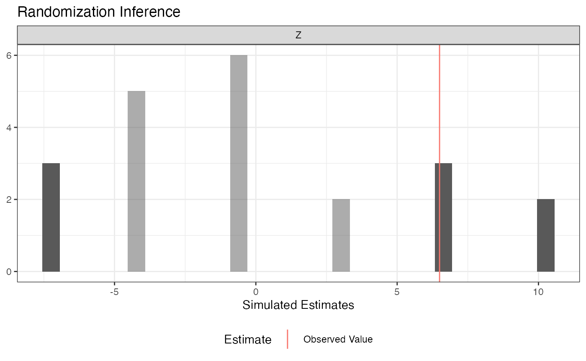
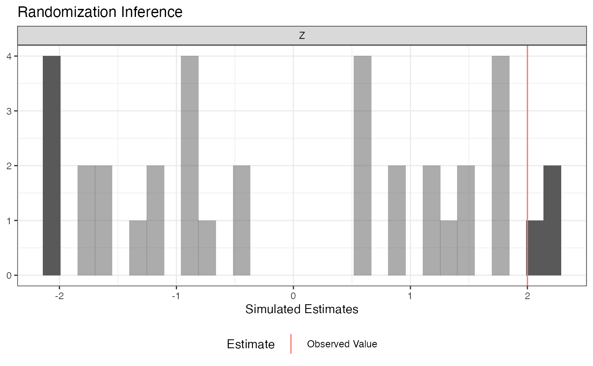
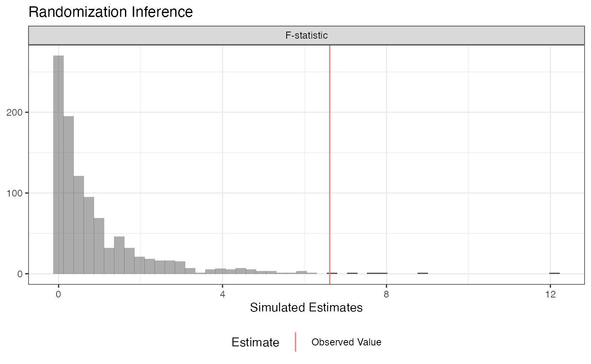
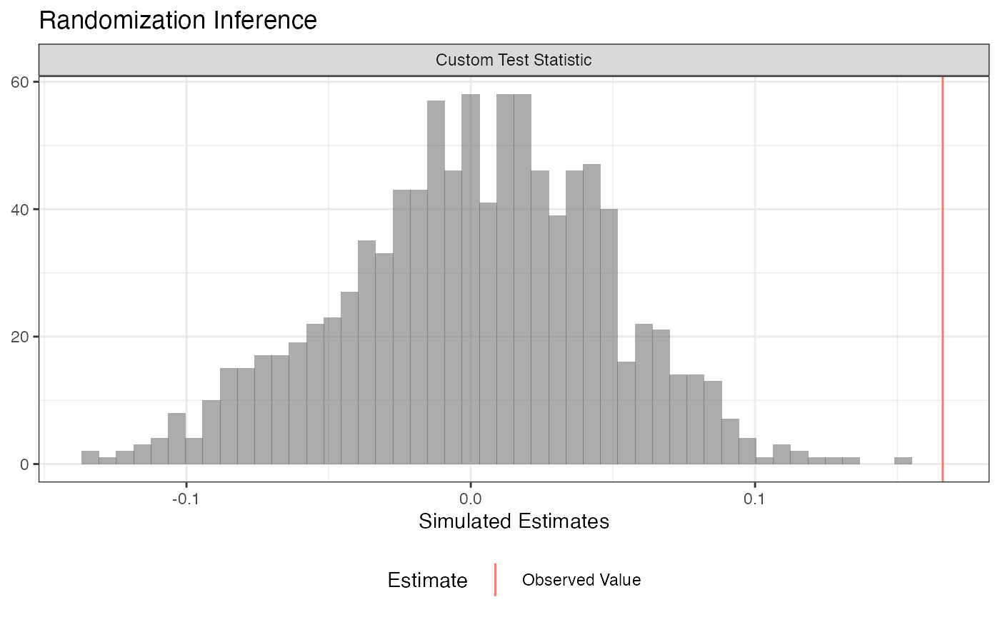
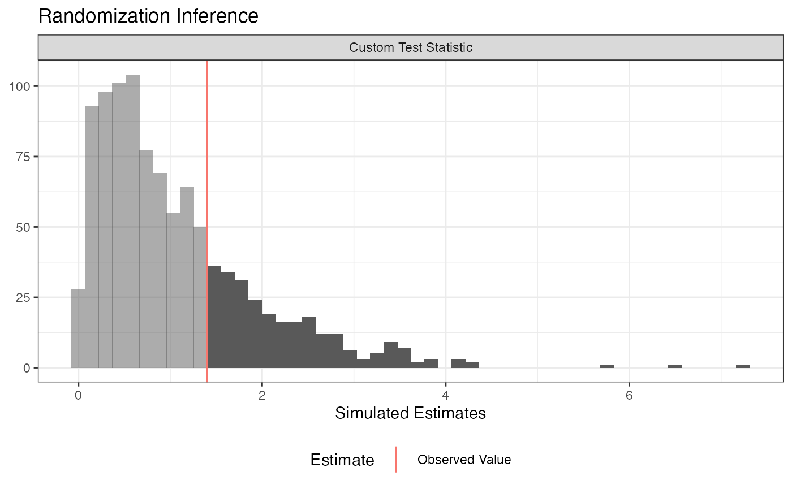

Randomization Inference with ri2
Alexander Coppock, Yale University
2018-01-25
Randomization inference (RI) is procedure for conducting hypothesis tests in randomized experiments. RI is useful for calculating the the probability that:
- a test statistic would be as extreme or more as observed…
- if a particular null hypothesis were true…
- over the all the possible randomizations that could have occurred acccording to the design.
That probability is sometimes called a \(p\)-value.
Randomization inference has a beautiful logic to it that may be more appealing to you than traditional hypothesis frameworks that rely on \(t\)- or \(F\)-tests. For a really lovely introduction to randomization inference, read Chapter 3 of Gerber and Green (2012).
The hard part of actually conducting randomization inference is the accounting. We need to enumerate all (or a random subset of all) the possible randomizations, correctly implement the null hypothesis, maybe figure out the inverse probability weights, then calculate the test statistics over and over. You can do this by hand with loops. The ri2 package for r was written so that you don’t have to.1
Basic syntax
Gerber and Green (2012) describe a hypothetical experiment in which 2 of 7 villages are assigned a female council head and the outcome is the share of the local budget allocated to water sanitation. Their table 2.2 describes one way the experiment could have come out.
table_2_2 <- data.frame(Z = c(1, 0, 0, 0, 0, 0, 1),
Y = c(15, 15, 20, 20, 10, 15, 30))In order to conduct randomization inference, we need to supply 1) a test statistic, 2) a null hypothesis, and 3) a randomization procedure.
- The test statistic. The
formulaargument of theconduct_rifunction is similar to the regression syntax of r’s built-inlmfunction. Our test statistic is the coefficient onZfrom a regression ofYonZ, or more simply, the difference-in-means. - The null hypothesis. The
sharp_hypothesisargument of theconduct_rifunction indicates that we are imagining a (hypothetical!) world in which the true difference in potential outcomes is exactly0for all units. - The randomization procedure: The
declare_rafunction from therandomizrpackage allows us to declare a randomization procedure. In this case, we are assigning2units to treatment out of7total units.
library(ri2)## Loading required package: randomizr## Loading required package: estimatr# Declare randomization procedure
declaration <- declare_ra(N = 7, m = 2)
# Conduct Randomization Inference
ri2_out <- conduct_ri(
formula = Y ~ Z,
declaration = declaration,
sharp_hypothesis = 0,
data = table_2_2
)
summary(ri2_out)## coefficient estimate two_tailed_p_value null_ci_lower null_ci_upper
## 1 Z 6.5 0.3809524 -7.5 10plot(ri2_out)
More complex designs
The ri2 package has specific support for all the randomization procedures that can be described by the randomizr package:
- Simple
- Complete
- Blocked
- Clustered
- Blocked and clustered
See the randomizr vignette for specifics on each of these procedures.
By way of illustration, let’s take the blocked-and-clustered design from the ri package help files as an example. The call to conduct_ri is the same as it was before, but we need to change the random assignment declaration to accomodate the fact that clusters of two units are assigned to treatment and control (within three separate blocks). Note that in this design, the probabilities of assignment to treatment are not constant across units, but the conduct_ri function by default incorporates inverse probability weights to account for this design feature.
dat <- data.frame(
Y = c(8, 6, 2, 0, 3, 1, 1, 1, 2, 2, 0, 1, 0, 2, 2, 4, 1, 1),
Z = c(1, 1, 0, 0, 1, 1, 0, 0, 1, 1, 1, 1, 0, 0, 1, 1, 0, 0),
cluster = c(1, 1, 2, 2, 3, 3, 4, 4, 5, 5, 6, 6, 7, 7, 8, 8, 9, 9),
block = c(rep(1, 4), rep(2, 6), rep(3, 8))
)
# clusters in blocks 1 and 3 have a 1/2 probability of treatment
# but clusters in block 2 have a 2/3 probability of treatment
with(dat, table(block, Z))## Z
## block 0 1
## 1 2 2
## 2 2 4
## 3 4 4block_m <- with(dat, tapply(Z, block, sum) / 2)
declaration <-
with(dat,{
declare_ra(
blocks = block,
clusters = cluster,
block_m = block_m)
})
declaration## Random assignment procedure: Blocked and clustered random assignment
## Number of units: 18
## Number of blocks: 3
## Number of clusters: 9
## Number of treatment arms: 2
## The possible treatment categories are 0 and 1.
## The probabilities of assignment are NOT constant across units. Your analysis strategy must account for differential probabilities of assignment, typically by employing inverse probability weights.ri2_out <- conduct_ri(
Y ~ Z,
sharp_hypothesis = 0,
declaration = declaration,
data = dat
)
summary(ri2_out)## coefficient estimate two_tailed_p_value null_ci_lower null_ci_upper
## 1 Z 2 0.1944444 -2.055556 2.222222plot(ri2_out)
Comparing nested models
A traditional ANOVA hypothesis testing framework (implicitly or explicitly) compares two models, a restricted model and an unrestricted model, where the restricted model can be said to “nest” within the unrestricted model. The difference between models is summarized as an \(F\)-statistic. We then compare the observed \(F\)-statistic to a hypothetical null distribution that, under some possibly wrong assumptions can be said to follow an \(F\)-distribution.
In a randomization inference framework, we’re happy to use the \(F\)-statistic, but we want to construct a null distribution that corresponds to the distribution of \(F\)-statistics that we would obtain if a particular (typically sharp) null hypothesis were true and we cycled through all the possible random assignments.
To do this in the ri2 package, we need to supply model formulae to the model_1 and model_2 arguments of conduct_ri.
Three Arm Trial
In this example, we consider a three-arm trial. We want to conduct the randomization inference analogue of an \(F\)-test to see if any of the treatments influenced the outcome. We’ll consider the sharp null hypothesis that each unit would express exactly the same outcome regardless of which of the three arms it was assigned to.
N <- 100
# three-arm trial, treat 33, 33, 34 or 33, 34, 33, or 34, 33, 33
declaration <- declare_ra(N = N, num_arms = 3)
Z <- conduct_ra(declaration)
Y <- .9 * .2 * (Z == "T2") + -.1 * (Z == "T3") + rnorm(N)
dat <- data.frame(Y, Z)
ri2_out <-
conduct_ri(
model_1 = Y ~ 1, # restricted model
model_2 = Y ~ Z, # unrestricted model
declaration = declaration,
sharp_hypothesis = 0,
data = dat
)
plot(ri2_out)
summary(ri2_out)## coefficient estimate two_tailed_p_value null_ci_lower null_ci_upper
## 1 F-statistic 4.429772 0.015 0.03876176 3.948768# for comparison
anova(lm(Y ~ 1, data = dat),
lm(Y ~ Z, data = dat))## Analysis of Variance Table
##
## Model 1: Y ~ 1
## Model 2: Y ~ Z
## Res.Df RSS Df Sum of Sq F Pr(>F)
## 1 99 101.310
## 2 97 92.831 2 8.4788 4.4298 0.01442 *
## ---
## Signif. codes: 0 '***' 0.001 '**' 0.01 '*' 0.05 '.' 0.1 ' ' 1Interaction terms
Oftentimes in an experiment, we’re interested the difference in average treatment effects by subgroups defined by pre-treatment characteristics. For example, we might want to know if the average treatment effect is larger for men or women. If we want to conduct a formal hypothesis test, we’re not interested in testing against the sharp null of no effect for any unit – we want to test against the null hypothesis of constant effects. In the example below, we test using the null hypothesis that all units have a constant effect equal to the estimated ATE. See Gerber and Green (2012) Chapter 9 for more information on this procedure.
N <- 100
# two-arm trial, treat 50 of 100
declaration <- declare_ra(N = N)
X <- rnorm(N)
Z <- conduct_ra(declaration)
Y <- .9 * .2 * Z + .1 * X + -.5 * Z * X + rnorm(N)
dat <- data.frame(X, Y, Z)
# Observed ATE
ate_hat <- coef(lm(Y ~ Z, data = dat))[2]
ate_hat## Z
## 0.1217316ri2_out <-
conduct_ri(
model_1 = Y ~ Z + X, # restricted model
model_2 = Y ~ Z + X + Z*X, # unrestricted model
declaration = declaration,
sharp_hypothesis = ate_hat,
data = dat
)
plot(ri2_out)
summary(ri2_out)## coefficient estimate two_tailed_p_value null_ci_lower null_ci_upper
## 1 F-statistic 13.99079 0 0.001554498 5.430353# for comparison
anova(lm(Y ~ Z + X, data = dat),
lm(Y ~ Z + X + Z*X, data = dat))## Analysis of Variance Table
##
## Model 1: Y ~ Z + X
## Model 2: Y ~ Z + X + Z * X
## Res.Df RSS Df Sum of Sq F Pr(>F)
## 1 97 128.85
## 2 96 112.46 1 16.389 13.991 0.0003126 ***
## ---
## Signif. codes: 0 '***' 0.001 '**' 0.01 '*' 0.05 '.' 0.1 ' ' 1Arbitrary test statistics
A major benefit of randomization inference is we can specify any scalar test statistic, which means we can conduct hypothesis tests for estimators beyond the narrow set for which statisticians have derived the variance. The ri2 package accommodates this with the test_function argument of conduct_ri. You supply a function that takes a data.frame as its only argument and returns a scalar; conduct_ri does the rest!
Difference-in-variances
For example, we can conduct a difference-in-variances test against the sharp null of no effect for any unit:
N <- 100
declaration <- declare_ra(N = N, m = 50)
Z <- conduct_ra(declaration)
Y <- .9 + rnorm(N, sd = .25 + .25*Z)
dat <- data.frame(Y, Z)
# arbitrary function of data
test_fun <- function(data) {
with(data, var(Y[Z == 1]) - var(Y[Z == 0]))
}
# confirm it works
test_fun(dat)## [1] 0.2397634ri2_out <-
conduct_ri(
test_function = test_fun,
declaration = declaration,
assignment = "Z",
outcome = "Y",
sharp_hypothesis = 0,
data = dat
)
plot(ri2_out)
summary(ri2_out)## coefficient estimate two_tailed_p_value null_ci_lower
## 1 Custom Test Statistic 0.2397634 0 -0.1332335
## null_ci_upper
## 1 0.1327711Balance Test
Researchers sometimes conduct balance tests as a randomization check. Rather than conducting separate tests covariate-by-covariate, we might be interested in conducting an omnibus test.
Imagine we’ve got three covariates X1, X2, and X3. We’ll get a summary balance stat (the \(F\)-statistic in this case), but it really could be anything!
N <- 100
declaration <- declare_ra(N = N)
dat <-
data.frame(
X1 = rnorm(N),
X2 = rbinom(N, 1, .5),
X3 = rpois(N, 3),
Z = conduct_ra(declaration)
)
balance_fun <- function(data) {
summary(lm(Z ~ X1 + X2 + X3, data = data))$f[1]
}
# Confirm it works!
balance_fun(dat)## value
## 0.9282366ri2_out <-
conduct_ri(
test_function = balance_fun,
declaration = declaration,
assignment = "Z",
sharp_hypothesis = 0,
data = dat
)## Warning in data.frame(est_sim = test_stat_sim, est_obs = test_stat_obs, :
## row names were found from a short variable and have been discardedplot(ri2_out)
summary(ri2_out)## coefficient estimate two_tailed_p_value null_ci_lower
## 1 Custom Test Statistic 0.9282366 0.438 0.05500923
## null_ci_upper
## 1 3.164616# For comparison
summary(lm(Z ~ X1 + X2 + X3, data = dat))##
## Call:
## lm(formula = Z ~ X1 + X2 + X3, data = dat)
##
## Residuals:
## Min 1Q Median 3Q Max
## -0.66053 -0.48476 -0.04135 0.47530 0.68638
##
## Coefficients:
## Estimate Std. Error t value Pr(>|t|)
## (Intercept) 0.44739 0.10946 4.087 9.07e-05 ***
## X1 -0.04112 0.05061 -0.812 0.419
## X2 -0.10585 0.10230 -1.035 0.303
## X3 0.03646 0.03174 1.149 0.253
## ---
## Signif. codes: 0 '***' 0.001 '**' 0.01 '*' 0.05 '.' 0.1 ' ' 1
##
## Residual standard error: 0.5031 on 96 degrees of freedom
## Multiple R-squared: 0.02819, Adjusted R-squared: -0.002179
## F-statistic: 0.9282 on 3 and 96 DF, p-value: 0.4302Conclusion
All of the randomization inference procedures had to, somehow or other, provide three pieces of information:
- a test statistic (the difference-in-means, a regression coefficient, the difference-in-variances, an \(F\)-statistic, etc.)
- a sharp null hypothesis. The “sharp” in this context means that the null hypothesis has something specific to say about every unit’s potential outcomes. For example, the sharp null hypothesis of no effect for any unit means hypothesizes that each unit’s treatment and control potential outcome are identical.
- A randomization procedure. We discussed simple, complete, blocked, clustered, and blocked and clustered designs, but these are not an exhaustive list of every kind of random assignment. Whatever your randomization procedure is, you have respect it!
Randomization inference is a useful tool because we can conduct hypothesis tests without making additional assumptions about the distributions of outcomes or estimators. We can also do tests for arbitrary test statistics – we’re not just restricted to the set for which statisticians have worked out analytic hypothesis testing procedures.
A downside is that RI can be a pain to set up – the ri2 package is designed to make this part easier.
The
ri2package is the successor to theripackage, written by Peter Aronow and Cyrus Samii.riwas lightweight, fast, and correct for the set of tasks it handled.ri2hopes to be all that and more.↩